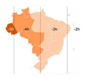
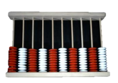
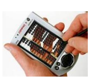

Capítulo 2: a indústria têxtil
OPERAÇÕES COM NÚMEROS INTEIROS
Contextualizando
Durante os processos de fabricação e produção, as coisas podem literalmente esquentar muito. Usar o calor ou alta temperatura é uma prática comum em fábricas para a produção dos mais variados produtos. Contudo, temperaturas elevadas, podem afetar a aparência física do produto, em particular, a cor. Esta mudança de cor em função da mudança de temperatura é chamada de termocromismo e é problemática para aplicações em plásticos, revestimentos e tecidos durante inspeções de controle de qualidade.
A reação de um pigmento ou corante à alta temperatura depende das suas propriedades químicas e do material utilizado. Uma temperatura muito quente ou longa exposição à alta temperatura pode estragar completamente a cor de um objeto. Em outros casos, um objeto, ou amostra, ganha outro tom de cor até se estabilizar novamente à temperatura ambiente. Certas cores são mais suscetíveis a esta mudança, dependendo da aplicação.
Na indústria têxtil, por exemplo, um material têxtil passa por um tingimento e um processo de secagem que, muitas vezes, muda a sua cor temporariamente. Depois de serem retirados do banho de corante, os tecidos são enxaguados e acabados, e, em seguida, colocados em alta temperatura para secar.
A amostra é então removida da secagem e colocada em repouso em temperatura ambiente. Durante este tempo os fabricantes podem notar uma mudança na cor do tecido. Um tecido tingido de azul, por exemplo, pode mudar para um tom avermelhado enquanto ainda está quente ou logo após a secagem e em seguida, se ajustar lentamente à sua cor correta, após sua estabilização térmica no ambiente. Devido a este desvio temporário de cor, a avaliação da amostra em relação ao padrão apresentará resultados incorretos durante o período de resfriamento.
http://sensing.konicaminolta.com.br/images/blogImages/thermochromism-the-effects-of-temperature-on-pigments-and-dyes.png
http://sensing.konicaminolta.com.br/2014/04/termocromismo-os-efeitos-da-temperatura-em-pigmentos-e-corantes/
Para trabalhar com as variações de temperatura, é necessário conhecer os números inteiros que conhecemos no capítulo anterior, mas como operar esses números?
(RE) CONSTRUINDO CONHECIMENTOS
Caro aluno,
Ao longo deste capítulo, trabalharemos om as operações com números inteiros que são muito utilizadas quando trabalhamos com diferenças de temperatura.
OPERAÇÕES COM NÚMEROS INTEIROS
- Adição de Números Inteiros
- Adição de dois números inteiros positivos:
Inicialmente, vamos aprender a adição de números inteiros na reta numérica.
Vamos adicionar (+4) + (+2)
Observe que, partindo do zero, andamos 4 unidades para a direita e, depois, mais duas unidades para a direita, logo, chegamos ao número + 6.
Adição de dois números inteiros negativo
Vamos adicionar (-2) + (-3)
Observe que, partindo do zero, andamos duas unidades para a esquerda e, depois, mais três unidades para a esquerda, logo, andamos cinco unidades para a esquerda, chegando ao número – 5.
Podemos dizer então que quando adicionamos dois números inteiros de mesmo sinal, adicionamos seus valores absolutos e conservamos o sinal.
Adição de números inteiros de sinais contrários
Vamos adicionar (-3) + (+5)
Partindo do zero, andamos 3 unidades para a esquerda e, depois, andamos 5 unidade para a direita, chegando ao número +2.
Logo: (-3) + (+5) = +2
Vamos adicionar: (+2) + (-5)
Partindo do zero, andamos duas unidades para a direita, depois andamos cinco unidades para a esquerda, parando no número -3.
Logo: (+2) + (-5) = -3
Vamos adicionar: (+2) + (-2)
Partindo do zero, andamos duas unidades para a direita, depois andamos duas unidades para a esquerda, retornando para o zero.
Logo: (+2) + (-2) = 0
Podemos dizer então que: quando adicionamos dois números inteiros de sinais contrários, subtraímos seus valores absolutos e damos o sinal do número de maior valor absoluto. Caso esses números sejam opostos, a soma é igual a zero.
Subtração de números inteiros
Vamos considerar a subtração de (+3) – (+2). Observe que - (+2) é o oposto de +2. Como o oposto de (+2) é -2, podemos realizar a operação da seguinte forma:
(+3) – (+2) = (+3) + (-2) = +1
Assim, podemos dizer que: a subtração de números inteiros é calculada somando-se o primeiro número ao oposto do segundo.
PARA SABER MAIS
Fusos horários no Brasil Como a Terra leva aproximadamente vinte e quatro horas para completar o ciclo do movimento de rotação, que resulta na existência alternada entre dias e noites, o planeta é dividido em 24 fusos horários, em que cada fuso representa uma hora em sua área de abrangência. Essa contagem é feita a partir do Meridiano de Greenwich, uma linha imaginária estabelecida por convenção e que “corta” a cidade de Londres e toda a sua extensão em direção ao sul.
 Dessa forma, todos as localidades que se encontram a leste (oriente) em relação a Greenwich tem suas horas somadas pelo número de fusos de distância, enquanto tudo o que se encontra a oeste (ocidente) tem suas horas diminuídas. O território brasileiro, por se encontrar no hemisfério ocidental, possui o seu horário atrasado em relação ao meridiano mencionado. Além disso, em razão de o país possuir uma ampla extensão, sua localização é dividida em quatro fusos horários, cuja demarcação oficial (a hora legal) é estabelecida conforme o mapa acima.
http://brasilescola.uol.com.br/brasil/fuso-horario-brasileiro.htm
Multiplicação de números inteiros
Anteriormente vimos que a multiplicação é a soma de parcelas iguais. Assim:
(+2) . (+4) = (+4) + (+4) = +8, portanto, quando multiplicamos dois números positivos, obtemos um número positivo.
(+2) . (-4) = (-4) + (-4) = -8, portanto, quando multiplicamos um número positivo por um número negativo, obtemos um número negativo.
Assim, observamos que, na multiplicação de números inteiros temos:
Quando multiplicamos dois números inteiros de mesmo sinal, obtemos um número positivo.
Quando multiplicamos dois números inteiros de sinais contrários, obtermos um número negativo.
Divisão de números inteiros
Já sabemos que a divisão é a operação inversa da multiplicação, assim, sabemos que, por exemplo:
(+60) : (-15) = -4, porque (-4) . (-15) = + 60
(-30) : (+10) = -3, porque (-3) . (+10) = -30
(-65) : (-13) = +5, porque (+5) . (-13) = -65
Assim, em uma divisão entre dois números inteiros, com divisor diferente de zero, temos:
Quociente positivo: quando dividendo e divisor são de mesmo sinal.
Quociente negativo: quando dividendo e divisor são de sinais contrários.
Potenciação de números inteiros
Inicialmente vamos relembrar os termos da potenciação, que vimos anteriormente:
Na potenciação de números inteiros, temos:
A potência de base positiva é um número positivo.
Exemplo: (+2)3 = (+2) . (+2) . (+2) = +8
A potência de base negativa é positiva quando o expoente é par é negativa quando o expoente é ímpar.
Exemplo:
(-2)2 = +4
(-2)3 = -8
Toda a potência que tem como base um número inteiro e expoente igual a um, é igual a própria base.
Exemplo: 31 = 3
Toda potência que tem na base um número inteiro não nulo e expoente zero é igual a 1.
Exemplo:2 0 = 1
Propriedades da potenciação
Produto de potências de mesma base: Para reduzirmos um produto de potências de mesma base a uma só potência, conservamos a base e somamos os expoentes.
Exemplo:
(-4)2 . (-4)2 = (-4)2+2 = (-4)4
Quociente de potências de mesma base: Para reduzirmos um quociente de potências de mesma base a uma só potência, conservamos a base e subtraímos os expoentes.
Quociente de potências de mesma base: Para reduzirmos um quociente de potências de mesma base a uma só potência, conservamos a base e subtraímos os expoentes.
Exemplo:
(-4)3 : (-4)2 = (-4)3-2 = (-4)1 = -4
Potência de uma potência: para reduzirmos a potência de uma potência a um só expoente, conservamos a base e multiplicamos os expoentes.
Exemplo:
[(-2)2 ]3 = (-2)2x3 = (-2)6
Potência de um produto: Para elevar um produto a um expoente, elevamos cada fator a esse expoente:
Exemplo:
[(-2) . (-3)]3 = (-2)3 . (-3)3
 O ábaco é um instrumento bem sucedido que, segundo os estudiosos, foi uma invenção dos chineses para facilitar os cálculos, pois com o passar do tempo foi surgindo a necessidade de fazer “contas” cada vez mais complexas, assim inventaram o ÁBACO, formado por fios paralelos e contas ou arruelas deslizantes, que de acordo com a sua posição, representa a quantidade a ser trabalhada, contém 2 conjuntos por fio, 5 contas no conjunto das unidades e 2 contas que representam 5 unidades. O ábaco foi disseminando por toda a sociedade, com a mesma função, o que mudava era somente sua nomenclatura: O ábaco japonês é conhecido como SOROBAN, os russos chamam de TSCHOTY. Uma pessoa
Uma pessoa que manuseava um ábaco com agilidade conseguia fazer uma multiplicação de 5 algarismos com a mesma rapidez que uma pessoa faz hoje utilizando uma calculadora digital. Ainda hoje, depois de 3 mil anos da sua invenção, comerciantes de algumas regiões da Ásia utilizam ainda esse instrumento
http://s1.static.brasilescola.uol.com.br/artigos/kkkkkk.jpg?i=http://brasilescola.uol.com.br/upload/e /kkkkkk.jpg&w=500&c=FFFFFF&t=1
Como fazer os cálculos no ábaco? O cálculo começa à esquerda, ou na coluna mais alta envolvida em seu cálculo, trabalha da esquerda para a direita. Assim, se tiver 548 e desejar somar com 637, primeiro colocará 548 na calculadora. Daí, adiciona 6 ao 5. Segue o padrão 6 = 10 – 4 por remover o 5 na vara das centenas e adicionar 1 na mesma vara (- 5 + 1 = - 4) daí, adicione uma das contas de milhares à vara da esquerda. Daí passa o três ao quatro, o sete ao oito, no ábaco aparecerá a resposta: 1.185. 
Por operar assim, da esquerda para a direita, o cálculo pode ser iniciado assim que souber o primeiro dígito. Na aritmética mental ou escrita, o cálculo começa a partir das unidades ou do lado direito do problema.
http://brasilescola.uol.com.br/matematica/o-abaco.htm
VOCÊ SABIA?
Quando resolvemos expressões numéricas envolvendo todas as operações devemos seguir uma ordem.
1º) multiplicações e divisões
2º) adições e subtrações
Se houver sinais de associação (parênteses, colchetes e chaves) devemos proceder da seguinte maneira:
1º) As contas dentro dos parênteses seguindo a ordem acima colocada
2º) As contas dentro dos colchetes seguindo a ordem acima colocada
3º) As contas dentro das chaves seguindo a ordem acima colocada
Observe o exemplo:
15+[(3x6-2)-(10-6:2)+1]=
= 15+[(18-2)-(10-3)+1]=
=15+[16-7+1]=
=15+[9+1]=
=15+10=
=25
PRATICANDO... AÇÃO E REFLEXÃO
1) Em uma cidade do Alasca, o termômetro marcou –15 pela manhã. Se a temperatura descer mais 13°, o termômetro vai marcar:
a) - 28°
b) - 2°
c) 2°
d) 28°
2) Sendo N = (-3)² – 3², então, o valor de N é:
a) 18.
b) 0.
c) –18.
d) 12.
3) Na reta numérica da figura abaixo, o ponto f corresponde ao número inteiro -9 e o ponto h ao inteiro -7.
Nessa reta, o ponto correspondente ao inteiro zero estará:
a) sobre o ponto k.
b) entre os pontos i e j.
c) sobre o ponto n.
d) sobre o ponto o.
4) Em uma loja de informática, Paulo comprou: um computador no valor de 2200 reais, uma impressora por 800 reais e três cartuchos que custam 90 reais cada um. Os objetos foram pagos em 5 parcelas iguais. O valor de cada parcela, em reais, foi igual a:
a) 414
b) 494
c) 600
d) 654
5) O esquema a seguir representa a rua onde Elvira mora.
a) Certo dia Elvira saiu de casa e fez o seguinte trajeto: foi até o correio mandar uma carta para sua amiga e em seguida foi assistir à missa. Comeu um lanche na padaria após a missa, foi ao banco pagar uma conta e foi buscar sua filha na escola, pararam na praça para tomar um sorvete foram para casa. Quantos metros Elvira andou nesse percurso?
b) Saindo da casa de Elvira, faça o seguinte trajeto sobre a reta numérica: 400 m para a direita, 300 m para a esquerda, 500 m para a direita, 300 m para a esquerda e 100 m para a esquerda. Em que local você parou da reta?
6) Calcule o valor das expressões:
a) 2 . (+5) + 13 =
b) 3 . (-3) + 8 =
c) -17 + 5 . (-2) =
d) (-9) . 4 + 14 =
e) (-7) . (-5) - (-2) =
f) (+4) . (-7) + (-5) . (-3) =
g) (-3) . (-6) + (-2) . (-8) =
h) (+3) . (-5) - (+4) . (-6) =
i) -14 + 42 : 3 =
j) 40 : (-2) + 9 =
k) (-12) . 3 + 6 =
l) (-54) : (-9) + 2 =
m) 20 + (-10) . (-5) =
n) (-1) . (-8) + 20 =
o) 4 + 6 . (-2) =
p) 3 . (-7) + 40 =
q) (+3) . (-2) -25 =
O QUE APRENDI
No contexto da Indústria têxtil, aprendemos as possíveis transformações das cores dos materiais fabricados, no caso, os tecido, quando expostos a altas temperaturas. Por isso os cuidados com calor e o esfriamento ao fabricá-los. Nesse particular é muito importante o conhecimento dos números inteiros e suas operações e propriedades que aprendemos nesse capítulo. Nesse capítulo. Com o recurso da reta numérica, operamos com números negativos, oue exige o conhecimeno das regras dos sinais nas diferentes operações.
RESPOSTAS DAS QUESTÕES DA SEÇÃO: PRATICANDO... AÇÃO E REFLEXÃO
1) a
2) b
3) d
4) d
5) a) 2200m b) praça
6)